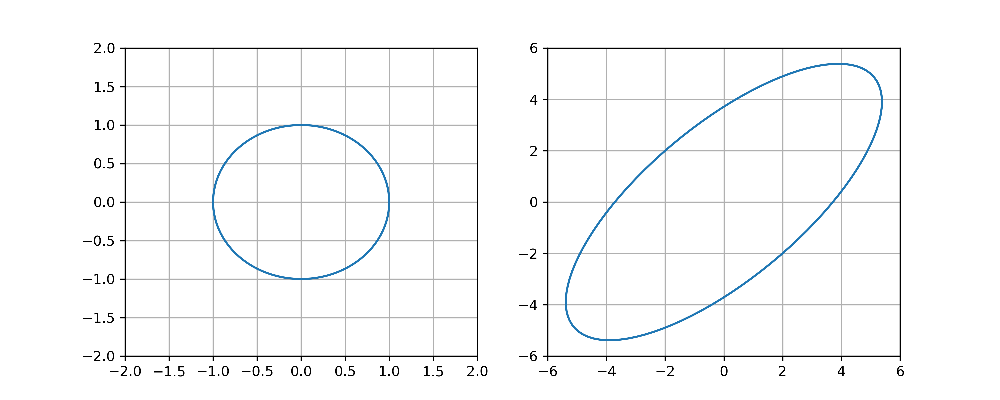

Error Analysis#
The condition number of a nonsingular matrix \(A\) is \(\mathrm{cond}(A) = \| A \| \| A^{-1} \|\). Given a linear system \(A \boldsymbol{x} = \boldsymbol{b}\), the condition number of \(A\) quantifies how sensitive the solution \(\boldsymbol{x}\) is relative to changes in \(\boldsymbol{b}\).
Vector Norms#
The Euclidean norm of a vector \(\boldsymbol{x} \in \mathbb{R}^n\) is
The Euclidean norm assigns a magnitude (or length) to a vector but it turns out that there are many different ways to define the “magnitude” of a vector!
A norm on \(\mathbb{R}^n\) is a function \(\| \cdot \|\) such that:
\(\| \boldsymbol{x} \| \geq 0\) for all \(\boldsymbol{x} \in \mathbb{R}^n\)
\(\| \boldsymbol{x} \| = 0\) if and only if \(\boldsymbol{x} = \boldsymbol{0}\)
\(\| c \boldsymbol{x} \| = |c| \| \boldsymbol{x} \|\) for any \(c \in \mathbb{R}\) and \(\boldsymbol{x} \in \mathbb{R}^n\)
\(\| \boldsymbol{x} + \boldsymbol{y} \| \leq \| \boldsymbol{x} \| + \| \boldsymbol{y} \|\) for all \(\boldsymbol{x} , \boldsymbol{y} \in \mathbb{R}^n\)
Condition 4 is called the triangle inequality. See Wikipedia:Norm.
Let \(1 \leq p < \infty\). The \(p\)-norm of a vector \(\boldsymbol{x} \in \mathbb{R}^n\) is given by
In particular, the 1-norm is given by
and the 2-norm is the familiar Euclidean norm
The \(\infty\)-norm of a vector \(\boldsymbol{x} \in \mathbb{R}^n\) is given by
The unit ball in \(\mathbb{R}^n\) relative to a norm \(\| \cdot \|\) is the set of unit vectors
Compare the unit balls in \(\mathbb{R}^2\) for the 1-norm, 2-norm and \(\infty\)-norm:

The most commonly used vector norm is the 2-norm. If we use the notation \(\| \boldsymbol{x} \|\) then we assume it is the 2-norm unless explicitly stately otherwise.
Matrix Norms#
A matrix norm is a function on matrices that satisfies the properties:
\(\| A \| > 0\) for all \(A \not= 0\)
\(\| A \| = 0\) if and only \(A = 0\)
\(\| c A \| = |c| \| A \|\) for any \(c \in \mathbb{R}\)
\(\| A + B \| \leq \| A \| + \| B \|\)
\(\| A B \| \leq \| A \| \| B \|\)
The Frobenius norm of a matrix \(A\) is given by
where \(a_{i,j}\) are the entries of \(A\)
The operator norm of a matrix \(A\) is given by
where \(\| \cdot \|\) is the 2-norm.
The operator norm satisies the property \(\| A \boldsymbol{x} \| \leq \| A \| \| \boldsymbol{x} \|\) for all \(\boldsymbol{x} \in \mathbb{R}^n\).
Let \(A\) be a nonsingular matrix. Then
In other words, \(\| A \|\) is the maximum stretch of a unit vector by the linear transformation \(A\), and \(\| A^{-1} \|\) is the reciprocal of the minimum stretch of a unit vector by the linear transformation \(A\).
Proof
Note that \(\| A \boldsymbol{x} \| / \| \boldsymbol{x} \|= \| A ( \boldsymbol{x} / \| \boldsymbol{x} \| ) \|\) therefore
Similarly, we can rearrange the definition of \(\| A^{-1} \|\) to find:
Let \(D\) be a diagonal matrix and let \(\boldsymbol{d}\) be the vector of diagonal entries of \(D\):
Then \(\| D \| = \| \boldsymbol{d} \|_{\infty} = \max \{ |d_1| , \dots, |d_n| \}\), and \(\| D \|_F = \| \boldsymbol{d} \|_2\).
Proof
Compute
The equality \(\| D \|_F = \| \boldsymbol{d} \|_2\) is clear.
How do we compute the matrix norm \(\| A \|\) for a general matrix? This is a nontrivial problem and we will see later how to use the singular values of \(A\) to determine the matrix norm.
Condition Number#
The condition number of a nonsingular square matrix \(A\) is
By convention, we define \(\mathrm{cond}(A) = \infty\) if \(\det(A) = 0\).
If \(A\) is nonsingular, we have
The image below shows the unit circle and its image under the linear transformation defined by a \(2 \times 2\) matrix \(A\). Determine \(\| A \|\), \(\| A^{-1} \|\) and \(\mathrm{cond}(A)\).

Observe the maximum stretch of a unit vector is \(\| A \| = 3 / \sqrt{2}\), the minimum stretch is \(1/\sqrt{2}\) therefore \(\| A^{-1} \| = \sqrt{2}\) and the condition number is \(\mathrm{cond}(A) = 3\).
Relative Errors#
Let \(A\) be a nonsingular matrix and consider the linear system \(A \boldsymbol{x} = \boldsymbol{b}\). If a small change \(\Delta \boldsymbol{b}\) corresponds to a change \(\Delta \boldsymbol{x}\) in the sense that \(A(\boldsymbol{x} + \Delta \boldsymbol{x}) = \boldsymbol{b} + \Delta \boldsymbol{b}\), then
Proof
Since \(A \boldsymbol{x} = \boldsymbol{b}\), we have \(\Delta x = A^{-1} \Delta \boldsymbol{b}\). Computing norms we find
Given a vector \(\boldsymbol{b}\) and small change \(\Delta \boldsymbol{b}\), the relative change (or relative error) is
The error bound
implies that if \(A\) has a large condition number then small changes in \(\boldsymbol{b}\) may result in very large changes in the solution \(\boldsymbol{x}\). In other words, the solution \(\boldsymbol{x}\) is sensitive to errors in \(\Delta \boldsymbol{b}\).
Exercises#
Show that the 1-norm satisfies the properties of a norm.
Show that the \(\infty\)-norm satisfies the properties of a norm.
Is the function \(\| \boldsymbol{x} \| = x_1 + \cdots + x_n\) a vecgtor norm? Explain.
The function
does not satisfy the triangle inequality if \(0 < p < 1\). Prove this for \(n=2\) and \(p=0.5\). In other words, find vectors \(\boldsymbol{x},\boldsymbol{y} \in \mathbb{R}^2\) such that
Is it true that \(\| \boldsymbol{x} \|_1 \leq \| \boldsymbol{x} \|_2 \leq \| \boldsymbol{x} \|_{\infty}\) for all \(\boldsymbol{x} \in \mathbb{R}^n\)? Explain.
Determine whether the statement is True or False: If \(\| A \| = 1\) then \(A = I\).
Suppose \(A\) is a 2 by 2 matrix such that the image of the unit circle under the linear transformation \(A\) is:

Determine \(\mathrm{cond}(A)\).